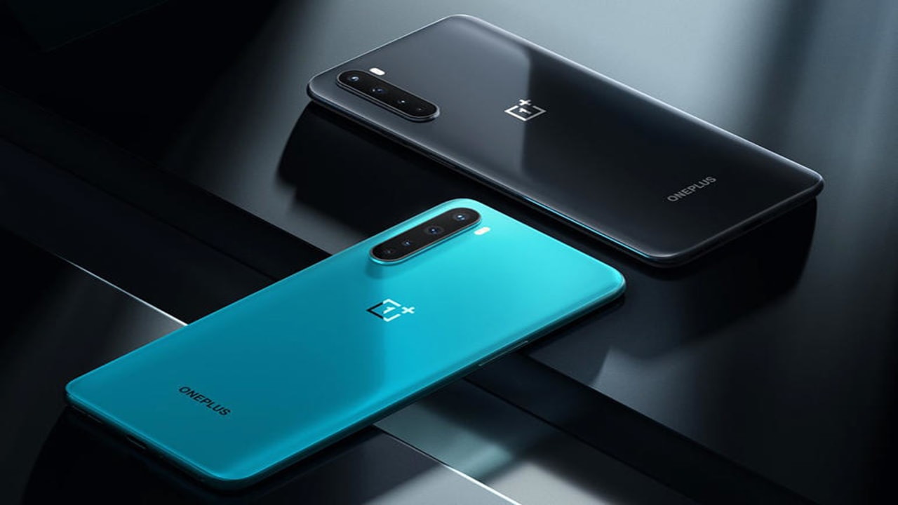

Aarush Mullick 1August,2020 
OnePlus NORD. Almost everything you need to know.
The Chinese smartphone manufacturing company OnePlus has come again with a brand-new phone OnePlus NORD which was brought to the market on 21st July 2020. Let’s know more about it.
COLOUR Variants
OnePlus NORD is available in two colours :
- • Blue Marble
- • Grey Onyx
CAMERA specifications

Front CAMERA: OnePlus NORD has dual selfie camera located on the top-left corner of display screen where one is 32 MP primary camera and the other camera is 8 MP camera for ultra-wide-angle selfies.
Back CAMERA: The back camera has 4 camera specification which has Quad Megapixels camera, 48 MP Sony IMX586, 8 MP ultra-wide-angle camera with 2 Megapixels camera for micro shots and finally 5 MP depth camera with dual LED flash on the side.
CHARGER specifications and BATTERY
OnePlus NORD comes with Warp-Charger 30 Power adapter with red Warp charge type-C cable. This charger is can charge the mobile from 0% to 70% in just 30 minutes. The BATTERY is 4115mAH which supports warp charging
SCREEN specifications
- • Screen size – 6.44 inches.
- • Resolution – 1080 * 2400 pixels.
- • Display Type – Fluid Full HD AMOLED Display from 60Hz-90Hz.
- • Protection – Gorilla Glass.
- • Aspect Ratio – 20:9.
PROCESSOR and OS
The PROCESSOR of OnePlus NORD is 2.4GHz octa-core Qualcomm Snapdragon 765G 5G and RAM varies from 6GB to 12GB. OnePlus NORD runs on Android 10 and we get OxygenOS operating system. Storage varies from 64GB-128GB-256GB.
MORE FEATURES
On the right side of OnePlus NORD, we have POWER ON-OFF on the top of which we have OnePlus alert slider which is very helpful. On the left side we have volume rocker. In the bottom we have USB port, charging port, DUAL SIM tray, primary microphone and speaker grill. The screen also has In-display fingerprint scanner. OnePlus NORD has pattern, PIN and fingerprint and face recognition security system for unlocking the phone which works fast.
PRICE
PRICE available for OnePlus NORD
- • 6GB RAM/ 64GB – Rs. 24,999.
- • 8GB RAM/ 128GB – Rs.27,999.
- • 12GB RAM/ 256GB – Rs. 29,999.
After reading this you all can visit the official page of OnePlus specially dedicated for OnePlus NORD to get the official review and also buy the smartphone on its official E-Commerce page.